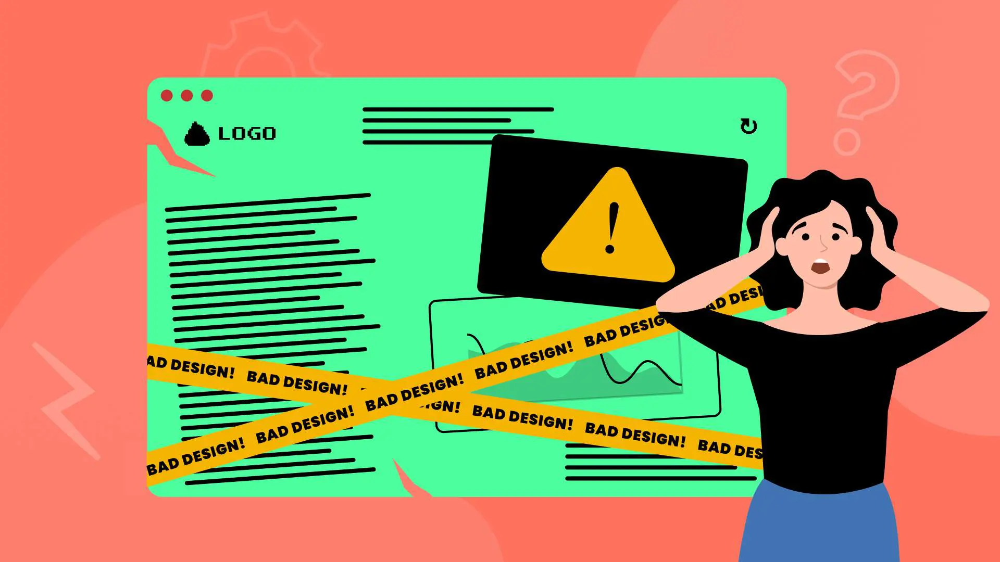

Website Evaluations
This page compares one well-designed website and one poorly designed website using the CRAP principles of design.
Stripe (Good Design)
- Contrast: Stripe makes headings, regular text, and buttons easy to tell apart. Important buttons stand out against the background without making the page feel too busy.
- Repetition: The same fonts, colors, button styles, and spacing show up throughout the page. These repeated choices make the site feel consistent as I scroll.
- Alignment: Text, buttons, and images line up within each section. The layout feels organized, and it is easy to follow the content from one section to the next.
- Proximity: Related headings, descriptions, and buttons are grouped together. There is enough space between separate sections to make the page easy to scan.
Arngren.net (Bad Design)

- Contrast: Many colors, images, text sizes, and prices compete for attention. With so much standing out at once, I have trouble deciding where to look first.
- Repetition: Some product styles repeat, but the text sizes, colors, and layouts vary across the page. The different styles make the page feel mixed together.
- Alignment: Products, images, prices, and descriptions appear in different positions without a clear grid. It is hard to follow a row or tell where one product listing ends.
- Proximity: A lot of products and details are packed close together. Information for separate items can look connected, which makes it harder to match a description or price with the right product.